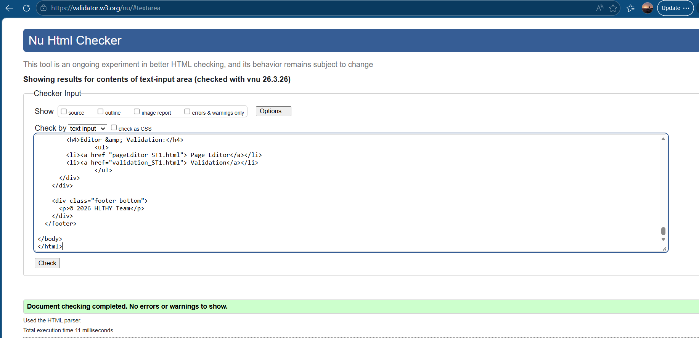
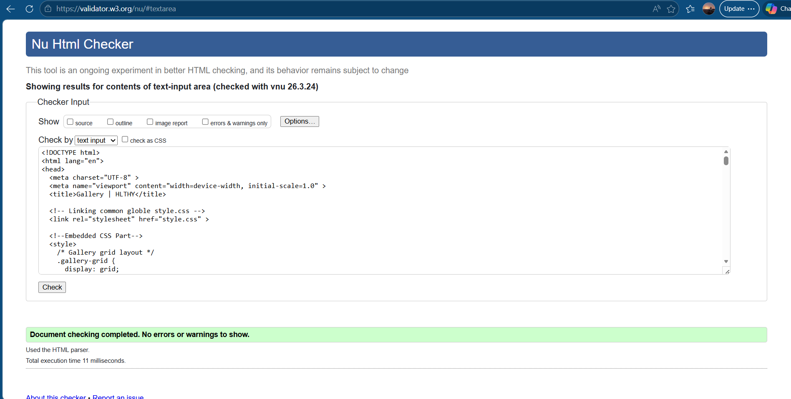
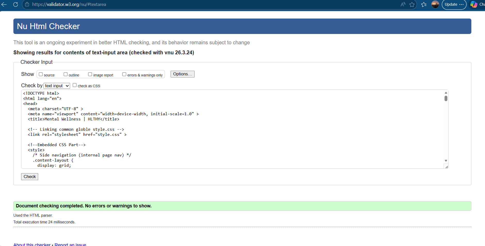

Student Name: Mohamed Anshaf | Student ID: 20242133/w2181969
Pages validated: home.html · gallery.html · content_ST1.html
The home page was validated using the W3C Markup Validation Service. The final version passed with no errors.

The gallery page was validated after completing all JavaScript and CSS. The page passed with no errors.

The content page was validated after writing all five sections of original content and adding all four images. The page passed with no errors.

Errors encountered: During development, the most common validation errors encountered were: duplicate id attributes (occurring when copying card structures), missing alt attributes on images added late in development, and an unclosed <div> in the gallery modal structure. All were corrected before final submission.
How they were resolved: Running the validator after each major addition to a page — rather than waiting until the page was complete — made errors much easier to locate and fix. The W3C validator's line-number references made it straightforward to identify the exact location of each issue.
What I learned: HTML validation is not just a compliance exercise — it genuinely catches issues that affect both browser rendering and accessibility. The duplicate ID error, for example, would have caused JavaScript's getElementById to return unpredictable results. Validating early and often is a development best practice, not just a coursework requirement.